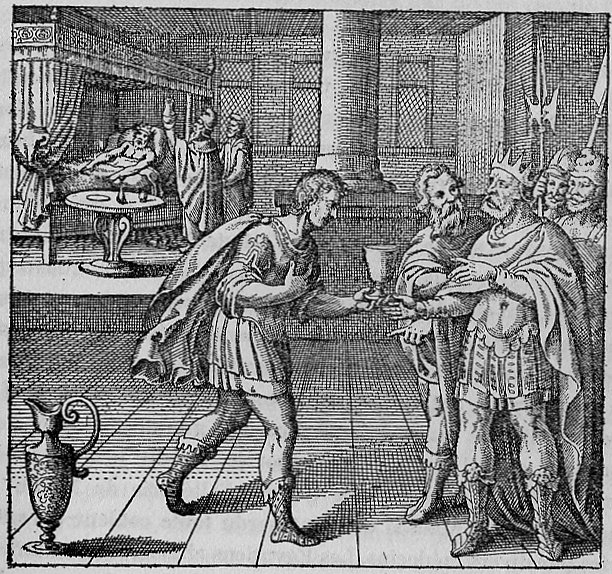

A king reclines on a bed or throne, visibly ill — his complexion pale or discolored, his posture weakened. Physicians or attendants approach with a vessel containing a potion or elixir, preparing to administer the remedy. The setting suggests a royal sickroom or court. The king wears his crown even in illness, and the physicians' gestures indicate both deference and medical purpose.
The king, fallen ill from drinking, is restored to health by a physician.
Maier develops the Merlini allegory of King Duenech in its final phase: the king, fallen ill from drinking foul waters, is restored to health by physicians who administer the correct elixir. He draws on Xerxes drinking muddy water in the desert as an analogy for the philosophical substance contaminated by impurities. The discourse describes the king's cure through successive stages — first Egyptian, then Alexandrian physicians — corresponding to different alchemical traditions' approaches to purification. Bernard of Treves's allegory describes the restored king dressed in a black cuirass, white tunic, and purple-red cloak — the three colors of the opus (nigredo, albedo, rubedo) worn simultaneously, signaling the completion of the work.
Emblem XLVIII bears the motto: "The king, fallen ill from drinking, is restored to health by a physician."
Maier develops the Merlini allegory of King Duenech in its final phase: the king, fallen ill from drinking foul waters, is restored to health by physicians who administer the correct elixir. He draws on Xerxes drinking muddy water in the desert as an analogy for the philosophical substance contaminated by impurities. The discourse describes the king's cure through successive stages — first Egyptian, then Alexandrian physicians — corresponding to different alchemical traditions' approaches to purification.
De Jong's source-critical analysis identifies the textual traditions Maier draws upon for this emblem.
The discourse draws on alchemical sources: Lullius tradition (via Harmonica Chemica), Merlini Allegory.
Walter Pagel: King accepting potion. Three-level physiological correspondence: stomach/liver/veins = three metallurgic coctions.
Walter Pagel: Pagel notes Emblem XLVIII shows the King in his canopied bed accepting a potion, another representation of the alchemical colour-change process from black to red alongside Emblem XXVIII.
H.M.E. de Jong: Detailed analysis of King Duenech's melancholic illness. Medical-humoral alchemical analogy. Draws on Merlini allegory. Parallel with Emblem XXVIII.
Substance: Aqua Vitae, Elixir
Figure: King Duenech (Rex Duenech), Rex
Source_Text: Allegoria Merlini
King accepting potion. Three-level physiological correspondence: stomach/liver/veins = three metallurgic coctions.
Citation: Review discussion
Pagel notes Emblem XLVIII shows the King in his canopied bed accepting a potion, another representation of the alchemical colour-change process from black to red alongside Emblem XXVIII.
Citation: p. 101
Detailed analysis of King Duenech's melancholic illness. Medical-humoral alchemical analogy. Draws on Merlini allegory. Parallel with Emblem XXVIII.
Citation: Netherlands Yearbook article